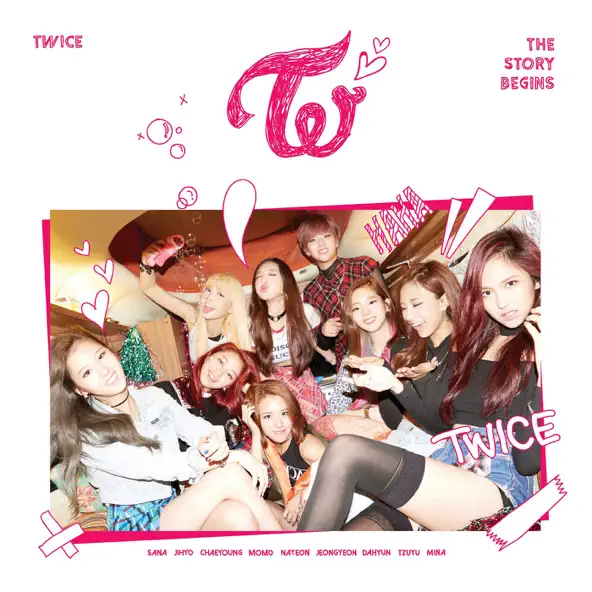
THE STORY BEGINS
2015.10.20
迷你專輯 · 1st Mini Album
03 / MUSIC & RELEASES
從出道作品到不同時期的音樂專輯， 一起回顧 TWICE 的音樂旅程
KOREAN DISCOGRAPHY
本頁收錄 TWICE 團體發行的韓文專輯， 依照發行日期由早到晚排列， 不包含日文專輯及成員個人作品

2015.10.20
迷你專輯 · 1st Mini Album
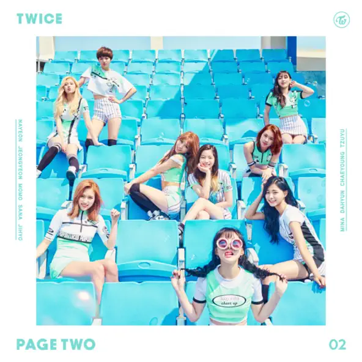
2016.04.25
迷你專輯 · 2nd Mini Album
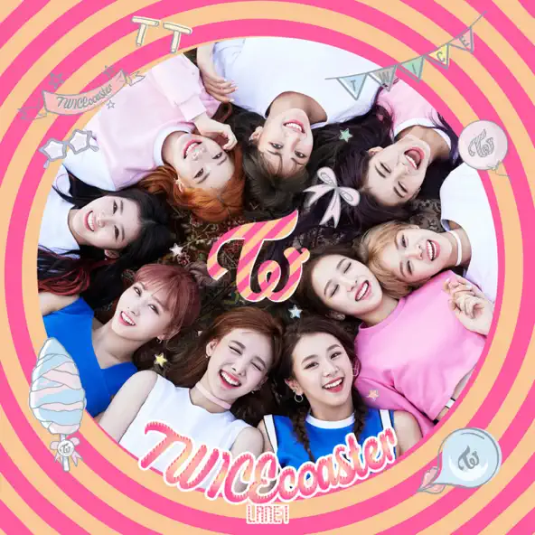
2016.10.24
迷你專輯 · 3rd Mini Album
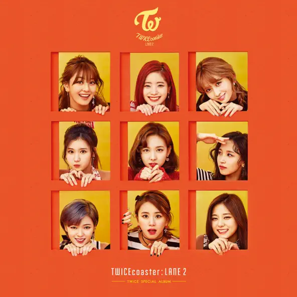
2017.02.20
特別專輯 · Special Album
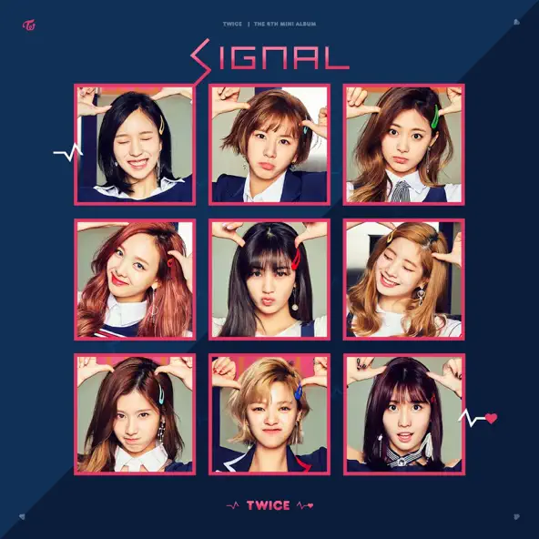
2017.05.15
迷你專輯 · 4th Mini Album
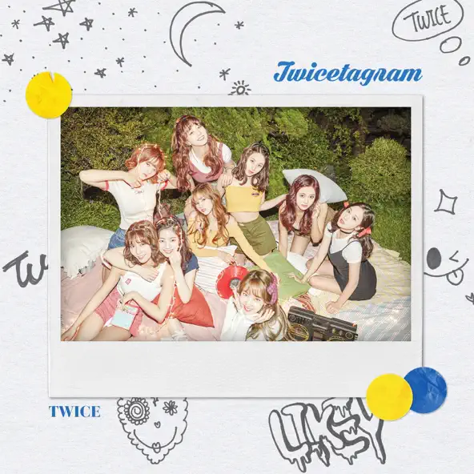
2017.10.30
正規專輯 · 1st Full Album
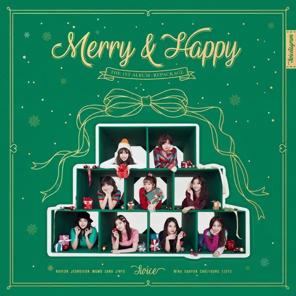
2017.12.11
改版專輯 · Repackage Album
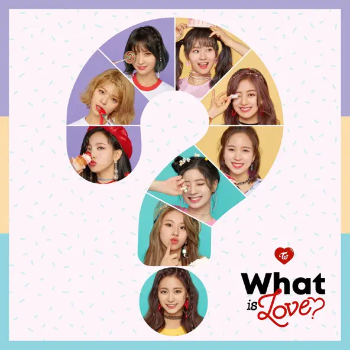
2018.04.09
迷你專輯 · 5th Mini Album
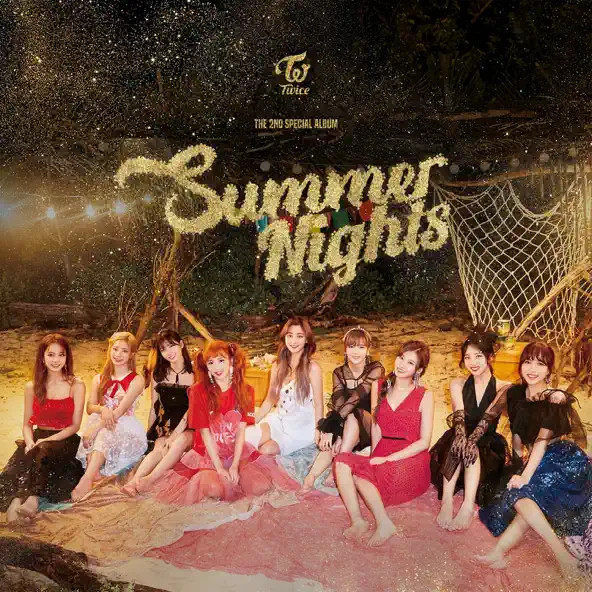
2018.07.09
特別專輯 · Special Album
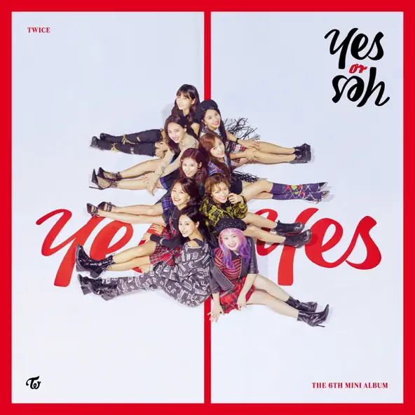
2018.11.05
迷你專輯 · 6th Mini Album
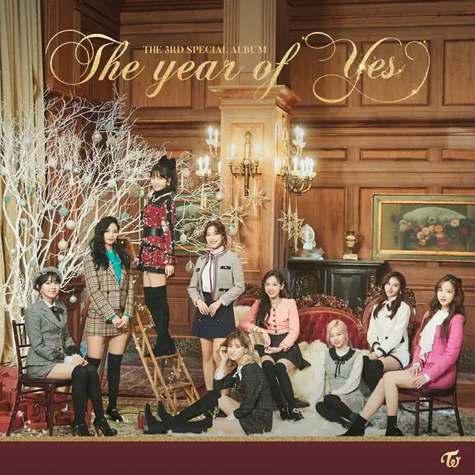
2018.12.12
特別專輯 · Special Album
2019.04.22
迷你專輯 · 7th Mini Album
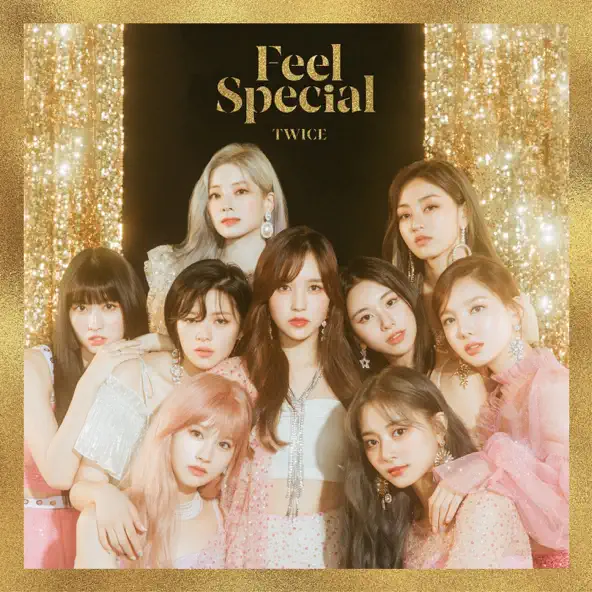
2019.09.23
迷你專輯 · 8th Mini Album
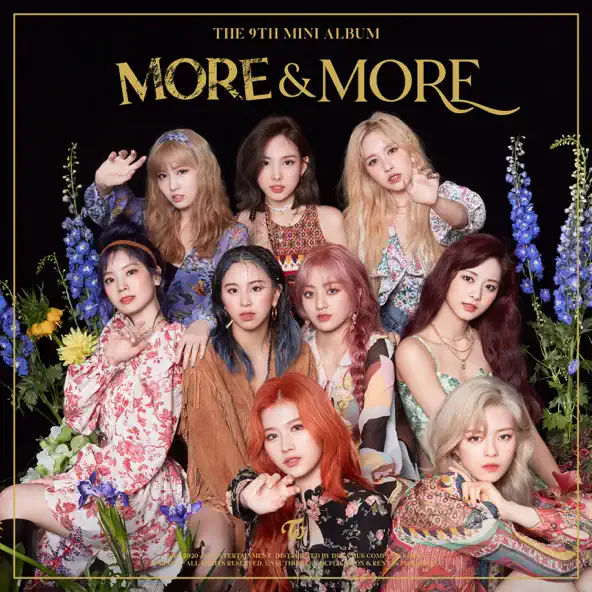
2020.06.01
迷你專輯 · 9th Mini Album
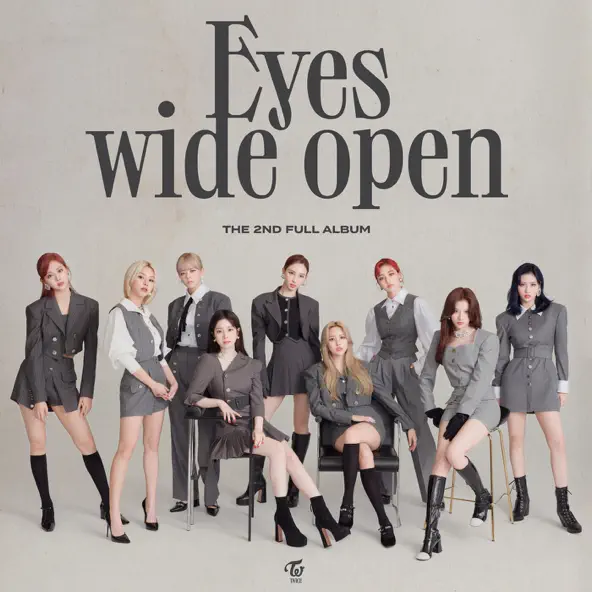
2020.10.26
正規專輯 · 2nd Full Album
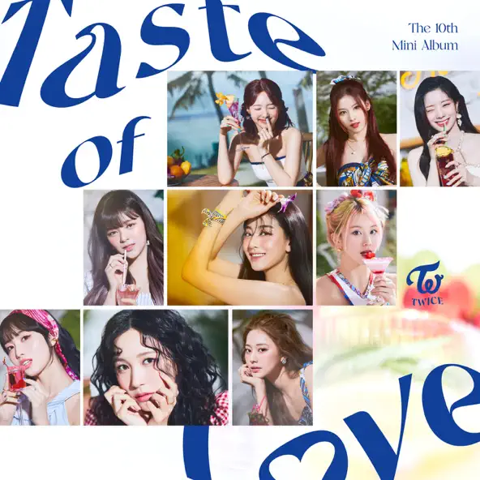
2021.06.11
迷你專輯 · 10th Mini Album
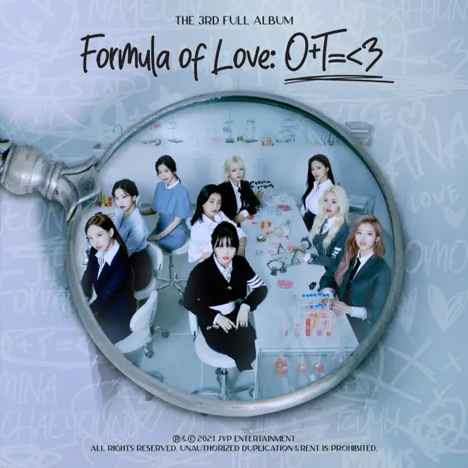
2021.11.12
正規專輯 · 3rd Full Album
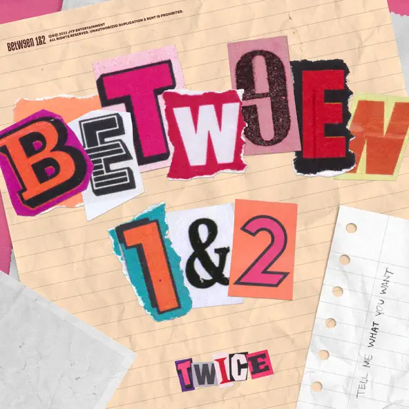
2022.08.26
迷你專輯 · 11th Mini Album
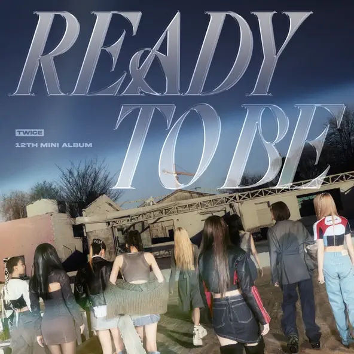
2023.03.10
迷你專輯 · 12th Mini Album
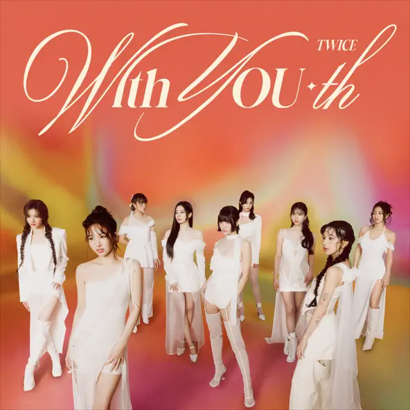
2024.02.23
迷你專輯 · 13th Mini Album
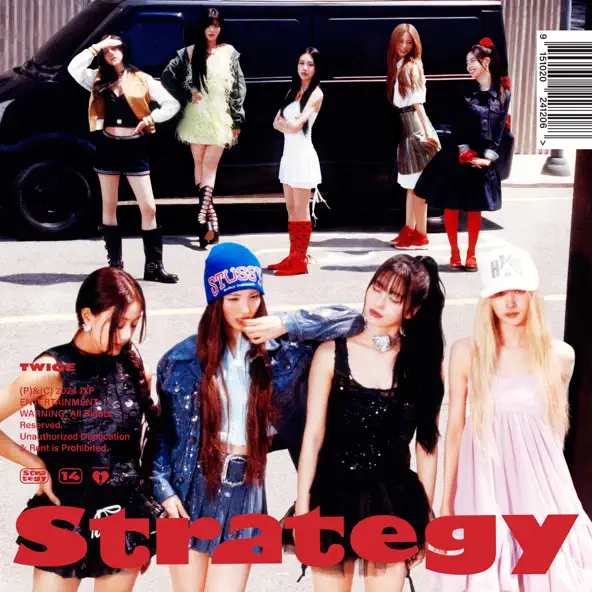
2024.12.06
迷你專輯 · 14th Mini Album
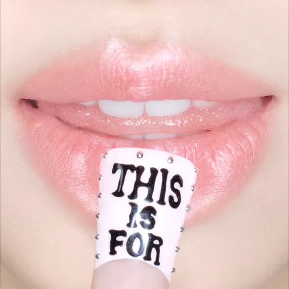
2025.07.11
正規專輯 · 4th Full Album
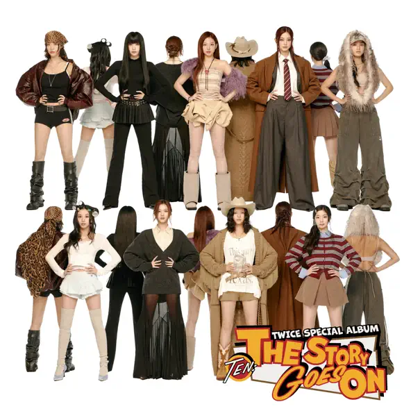
2025.10.10
特別專輯 · Special Album